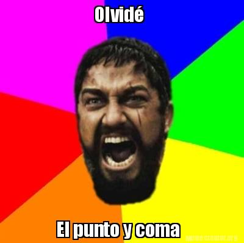
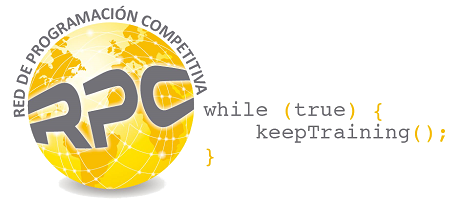
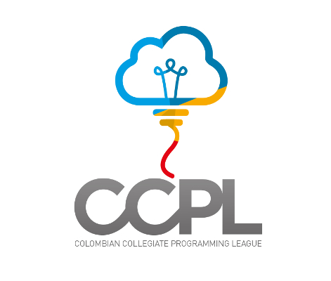
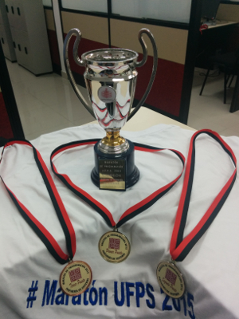

PROGRAMACIÓN COMPETITIVA
SILUX UFPS

Diviertete pensando, creando y resolviendo.
¿Qué son las maratones de programación?

ACM ICPC 2015, Marrakech, Marruecos.
Son competencias donde se mide la capacidad de programación y algoritmia de los participantes. La mas importante es la competencia ICPC (International Collegiate Programming Contest) auspiciada por la asociación ACM, que se realiza anualmente alrededor del mundo (2,534 universidades en 101 paises de los 6 continentes).
Generalidades
- Grupos de máximo 3 personas.
- Conjuntos de entre 8 y 12 problemas.
- 5 horas de competencia.
- Cada equipo cuenta con un coach que puede ser profesor o estudiante.
- Gana el equipo que resuelve más problemas en menos tiempo.
Beneficios
- Proyección académica y profesional.
- Competir con los mejores del pais.
- Retos y superación intelectual.
- Desarrollo de competencias como lógica de programación, análisis de problemas y optimización de código.
- Dominio de técnicas de diseño de algoritmos y estructuras de datos.
- Velocidad en el análisis, diseño e implementación de soluciones algorítmicas.
- Fortalecimiento del nivel de lectura y comprensión en inglés.
- Trabajo en equipo.
- Oportunidades laborales y de pasantias con grandes empresas como IBM, Intel, Google, Facebook y demás.
- Viajes y experiencias.

¿Cómo se solucionan los problemas?
- ¡Enfrenta el problema! Si no hay riesgo no hay diversión. Se valiente y acepta el reto.
- ¡Piensa! Encuentra ideas de como solucionarlo y elige una estrategia para hacerlo.
- ¡Codea menos... codea rápido! En estas competencias se valora mucho la agilidad así que piensa muy bien tu solución antes de empezar a codearla.
- ¡Has pruebas! Revisa y corrige bugs, inventate tus propios casos de prueba.
- Accepted! Esta es tu recompensa, despues de haber seguido todos estos pasos te mereces esa respuesta del juez. Si no es así no te preocupes, siempre hay estrategias para resolverlo.
¿En qué se programa?
- Se dispone de un computador por equipo.
- Los lenguajes aceptados son: Java, C y C++
- No se realizan interfaces gráficas.
Posibles respuestas al enviar un ejercicio
NO - WRONG ANSWER

NO - COMPILATION ERROR
NO - RUNTIME ERROR

NO - PRESENTATION ERROR

NO - TIME LIMITED EXCEEDED

YES - ACCEPTED
Puntajes
En una maratón de programación se califica la capacidad de resolver problemas correctamente, y la rapidez para hacerlo. El puntaje de un equipo consta de dos números: El número de problemas resueltos y la suma de los tiempos en minutos en los cuales se resolvió cada problema.
Cada solución incorrecta penalizará al equipo con 20 minutos adicionales.
Gana el equipo con más problemas resueltos en menos tiempo.
¿Donde se puede entrenar?
ENTRENAMIENTOS VIRTUALES
Existen diversas plataformas donde se puede practicar con cientos de ejercicios similares a los que aparecen en una maratón de programación. Algunos de estos sitios son:
CODEFORCES
http://codeforces.com/UVA
http://uva.onlinejudge.org/ICPC Archive
https://icpcarchive.ecs.baylor.edu/COJ
http://coj.uci.cu/ENTRENAMIENTOS PRESENCIALES
A lo largo del semestre se llevarán a cabo entrenamientos presenciales, donde se competirá junto a estudiantes de diferentes universidades y paises.
Red de Programación Competitiva (RPC)
Liga Colombiana de Programación (CCPL)
Competencias Oficiales
Maratón de programación UFPS
Maratón Nacional ACIS-REDIS
Equipos de toda Colombia compiten por 40 cupos a la fase latinoamericana. Este evento se lleva a cabo en simultáneo en 6 ciudades del país, los equipos de la UFPS participan en la sede de Bucaramanga (Universidad Pontificia Bolivariana).
Maratón Latinoamericana
Equipos de toda latinoamérica se enfrentan, separados por subregiones.
Colombia compite en la subregión Norte, junto a Venezuela y Panamá. Esta competencia se realizará en noviembre, en la Universidad de los Andes en Bogotá. Inicialmente, solo el ganador de la subregión clasifica a la maratón mundial.
Maratón Mundial
Gran final de ACM ICPC. Los mejores 128 equipos se reúnen a disputar el título mundial de programación competitiva. En el 2015 la maratón Mundial fue en Marruecos, siendo ganada por los extraterrestres estudiantes de St. Petersburg National Research University of IT, Mechanics and Optics.
Los ganadores de la maratón latinoamericana 2015 irán a la maratón Mundial en Tailandia, 2016.
Otras Competencias
Ademas de ACM ICPC existen otras competencias que se realizan con el mismo esquema de las maratones de programación, pero de manera individual.
FACEBOOK HACKER CUP
Anualmente, Facebook entrega grandes premios a los ganadores de su “Copa Hacker” que no es más que una maratón de programación. Ademas, muchos de los participantes top reciben ofertas de trabajo.
GOOGLE CODE JAM
Igual a la anterior, pero organizada por Google. También da grandes premios, y ofertas de trabajo a los mejores participantes.
CODEFORCES
En Codeforces regularmente se realizan maratones, excelentes para practicar. En algunas ocasiones realizan alianzas con empresas tecnológicas para realizar competencias donde los mejores reciben ofertas de trabajo y grandes premios.
Dinámica del grupo de estudio
Una reunión semanal. Fecha propuesta: Cada jueves a las 3:00PM
Cada semana se tratará un tema de importancia durante las maratones. Ademas se propondrán una serie de ejercicios sobre los temas estudiados. La siguiente semana, se discutirán estos problemas, antes de empezar el tema nuevo.
A lo largo del semestre se realizarán 8 competencias de preparación Nacionales e internacionales en las cuales la UFPS será sede presencial. Estas competencias se realizan los dias sabados, entre la 1PM y las 6PM. Se invita a los estudiantes a inscribirse y participar en estas competencias.
Temas de Estudio
- Herramientas, lenguajes y generalidades
- Estructuras de datos y librerias
- Analisis de Algoritmos
- Recursión, DFS y BFS
- Algoritmos Greedy
- Algoritmos clásicos de grafos
- Combinatoria y Conteo
- Probabilidad
- Programación Dinámica
- Teoría de números
- Procesamiento de Strings
¿A quién es este llamado?
Este llamado es a todas aquellas personas que se sientan a gusto compitiendo, que les guste el trabajo en equipo, que sientan gusto por la programación y los algoritmos (análisis y diseño), que quieran probarse a sí mismos y llevar sus capacidades al límite, todos aquellos que quieran ampliar sus conocimientos y que quieran competir con los mejores de la universidad, del país y ¿por que no? del mundo.
¿Cuales son los requisitos?
Para poder participar en ACM ICPC debes cumplir con POR LO MENOS UNO DE LOS SIGUIENTES REQUISITOS:
- Haber iniciado los estudios Universitarios en el 2011 o después.
- Haber nacido en 1992 o después.
- Llevar máximo 8 semestres en la carrera.
Y sobre todo tener la disciplina para entrenar ¡El resto lo trabajamos juntos! :)
Únete a nuestro grupo en Facebook. Allí informaremos sobre los eventos a realizar, compartiremos material de estudio, y resolveremos inquietudes entre todos. Sólo ve a http://goo.gl/AqVFp4 o busca "Grupo de Estudio Programación Competitiva UFPS".
¿Preguntas?
Muchas gracias.